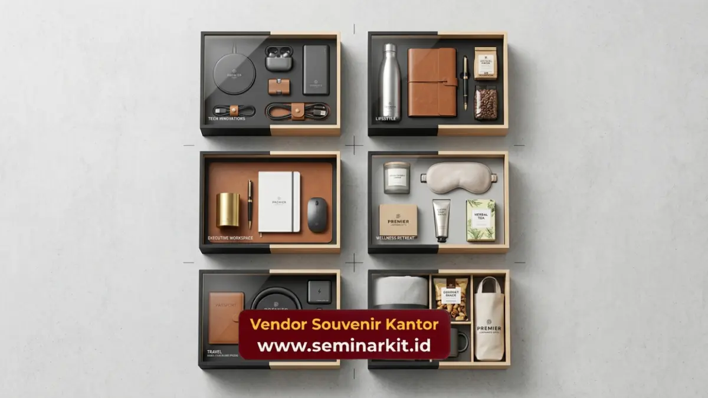

- Tahap konsultasi menjadi langkah awal untuk menentukan kebutuhan dan anggaran perusahaan
- Desain dan sampel produk disiapkan sebelum produksi massal dilakukan
- Proses produksi disesuaikan dengan jumlah pesanan dan kompleksitas desain
- Quality control dilakukan untuk memastikan produk sesuai spesifikasi
- Pengiriman disesuaikan dengan jadwal acara atau kebutuhan instansi
Perusahaan yang ingin memesan merchandise korporat dalam jumlah besar sebaiknya memahami tahapan proses pemesanan pada souvenir supplier agar dapat merencanakan waktu dan anggaran dengan lebih matang sejak awal.
Tahap Konsultasi Kebutuhan dan Anggaran
Tahap konsultasi menjadi langkah awal dalam proses pemesanan, di mana perusahaan menyampaikan kebutuhan produk, jumlah pesanan, anggaran, dan tujuan acara kepada tim souvenir supplier untuk mendapatkan rekomendasi produk yang sesuai.
Pada tahap ini, perusahaan biasanya menjelaskan konteks penggunaan merchandise, misalnya untuk seminar, hadiah klien, atau apresiasi karyawan, sehingga tim supplier dapat memberikan rekomendasi kategori produk dan estimasi biaya yang relevan dengan kebutuhan tersebut.
Komunikasi yang jelas pada tahap ini sangat penting untuk menghindari kesalahpahaman terkait spesifikasi produk maupun jadwal produksi yang akan ditentukan pada tahap selanjutnya.
Penentuan Desain dan Persetujuan Sampel Produk
Penentuan desain dilakukan setelah kebutuhan produk disepakati, di mana perusahaan dan tim souvenir supplier berdiskusi mengenai tata letak logo, warna, dan jenis material sebelum sampel produk dibuat untuk persetujuan akhir.
Sampel produk berfungsi sebagai acuan kualitas sebelum produksi massal dilakukan, sehingga perusahaan dapat memastikan hasil cetak logo, warna, dan bahan produk sudah sesuai ekspektasi. Tahap ini penting untuk menghindari kesalahan produksi dalam jumlah besar yang dapat memakan biaya dan waktu tambahan.
Setelah sampel disetujui, spesifikasi produk akan dikunci sebagai acuan produksi massal pada tahap berikutnya.

Proses Produksi Sesuai Jumlah dan Kompleksitas Pesanan
Proses produksi dilakukan sesuai jumlah pesanan dan kompleksitas desain, dengan waktu pengerjaan yang bervariasi tergantung jenis produk, teknik cetak, dan kapasitas produksi souvenir supplier pada periode tersebut.
Produk dengan desain sederhana dan teknik cetak standar seperti sablon umumnya dapat diproduksi lebih cepat dibandingkan produk dengan teknik personalisasi yang lebih kompleks seperti ukir laser atau bordir detail.
Volume pesanan juga memengaruhi durasi produksi, di mana pesanan dalam jumlah sangat besar memerlukan waktu pengerjaan yang lebih panjang.
Perusahaan disarankan mengajukan pemesanan jauh sebelum tanggal acara untuk memastikan waktu produksi mencukupi, terutama pada periode permintaan tinggi seperti menjelang akhir tahun.
Tahap Quality Control Sebelum Pengiriman
Quality control dilakukan untuk memastikan setiap produk yang telah diproduksi sesuai dengan spesifikasi desain dan standar kualitas yang telah disepakati sebelum dikirimkan kepada perusahaan.
Pada tahap ini, tim souvenir supplier umumnya memeriksa konsistensi hasil cetak logo, kualitas bahan, dan kelengkapan jumlah produk sesuai pesanan.\Produk yang tidak memenuhi standar kualitas biasanya akan diperbaiki atau diganti sebelum proses pengiriman dilakukan.
Tahap quality control ini penting untuk memastikan perusahaan menerima produk dalam kondisi terbaik, terutama untuk merchandise yang akan digunakan pada acara resmi atau diberikan langsung kepada klien penting.
Proses Pengiriman Sesuai Jadwal Instansi
Proses pengiriman dilakukan sesuai jadwal yang telah disepakati bersama, dengan mempertimbangkan lokasi instansi, jumlah produk, dan tenggat waktu acara agar merchandise dapat diterima tepat waktu.
Untuk pesanan dalam jumlah besar, pengiriman biasanya direncanakan lebih awal guna mengantisipasi kendala logistik yang mungkin terjadi, terutama jika instansi berada di luar kota atau membutuhkan pengiriman ke beberapa lokasi sekaligus.
Koordinasi yang baik antara perusahaan dan souvenir supplier pada tahap ini membantu memastikan seluruh produk tiba tepat waktu sesuai kebutuhan acara korporat yang telah direncanakan.
Memahami proses pemesanan souvenir supplier membantu perusahaan mempersiapkan kebutuhan merchandise korporat dengan lebih terencana, mulai dari konsultasi hingga pengiriman produk.
Untuk memulai proses pemesanan yang praktis dan terkoordinasi, hubungi tim vendorsouvenirkantor.web.id dan konsultasikan kebutuhan instansi Anda sekarang juga.

Banner promosi: klik gambar untuk langsung terhubung ke WhatsApp tim sales.